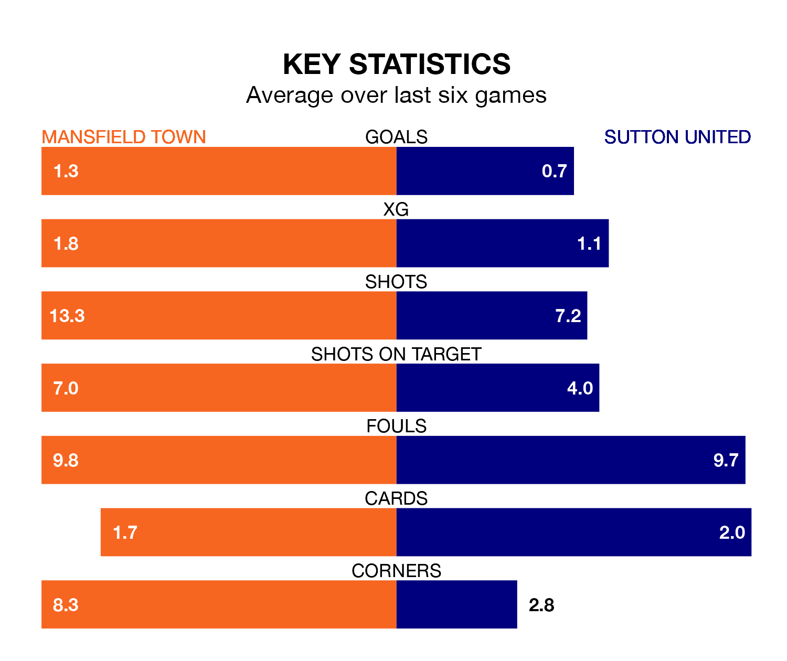

Mid-season relegation candidates Sutton United face a challenge away against high-flying Mansfield Town at the One Call Stadium on Saturday.
Sutton United are 23rd in the EFL League Two table, and have picked up four wins and seven draws in their 26 games to date.
The Stags, meanwhile, are third in the standings with 50 points, having won 13 and drawn 11, and are four points behind table-toppers Stockport County.
In Christy Pym, Mansfield can rely on one of the league's safest pair of hands. He has kept 10 clean sheets in his 26 appearances this season, and no 'keeper has prevented the opposition scoring more often in EFL League Two.
In Sutton's net, Dean Anthony Bouzanis has two clean sheets in 18 games. He has conceded a goal every 49 minutes, more than twice as often as the 117 minutes between goals for Pym.
With 30 goals in 26 games so far this season, United are the league's third-lowest scorers with 1.2 goals per game. And they are conceding more than average, letting in 54 goals at a rate of 2.1 per game.
Town, meanwhile, are above average scorers, with 1.7 goals per game, compared to a league average of 1.5. They have conceded 0.8 goals per game.
The Stags are in reasonable form in EFL League Two, with three wins and two draws from their last six games.
With a win and two draws over that period, the Us' form is much worse – they have taken five points from 18, compared to the hosts' 11.
In the last five years, Mansfield and Sutton have played each other on five occasions. Mansfield won one of them, Sutton three, and they drew once.
On average, the Stags scored 1.0 goal and the Us 1.4 in those matches.
Their last meeting was on December 23, when Mansfield won 2-0 away.
Mansfield's last match was on January 13, a 1-1 draw against Morecambe, with Baily Cargill getting the goal for the Stags.
Sutton drew 2-2 with Barrow last time out, also on January 13, with Harry Beautyman on the scoresheet.
Updated: 13:09 (UTC), 17/01/24